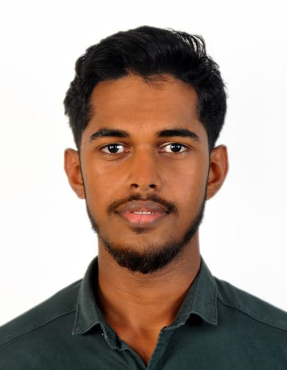

Yoosuf Ahamed

Summery
I am a Demonstrated dedication and self-motivation in all professional endeavors.
Education
- Ordinary leval : Babussalam Maha Vidyalaya (2009 - 2019)
- Advanced leval : Private Candidate (2019 - 2022)
Work experiance
Administrative and Design Coordinator : (2018 - 2019)
Worked as an Administrative Coordinator for a tuition center, where responsibilities included:
- Administrative Tasks: Managed day-to-day operations, including scheduling, student communications, and record-keeping.
- Design and User Interface:Designed and maintained the center’s website and digital materials, ensuring a user-friendly experience and visual appeal.
- Management:Oversaw the coordination of classes, managed resources, and facilitated smooth operational processes.
Freelance graphic designer in freelancer
Skills
- MS office package
- Adobe photoshop
- Canva
Awards and Certifications
- Community Life saving : Sarvodaya